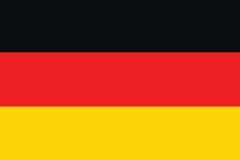

Alemanha é um país situado na Europa Ocidental com uma paisagem de florestas, rios, cordilheiras e praias do Mar do Norte. Além disso é um dos paises mais populosos (tirando a Russia da classificação) da Europa.
Gêrmanica, habitada por vários povos germânicos, foi conhecida e documentada pelos romanos antes do ano 100. A partir do século X, os territórios alemães formaram a parte central do Sacro Império Romano-Germânico, que durou até 1806. Durante o século XVI, o norte da Alemanha tornou-se o centro da Reforma Protestante./p>
Eisbein é o joelho do porco, usado como ingrediente muito importante da culinária alemã. Faz parte de vários pratos da culinária alemã, podendo ser preparado cozido, frito ou assado, dependendo do prato. Servido com chucrute é um dos pratos mais famosos da Alemanha.
A Alemanha é a quarta maior economia do mundo, é caracterizada pela sua força inovadora, orientação para a exportação e uma forte classe média. A Alemanha é a maior economia da União Europeia. As principais atividades ecônomicas da Almanha são:
Turismo: As cidades mais visitadas são Berlim, Munique, Hamburgo, Nuremberg e Frankfurt. Não obstante, o país é cheio de lugares incríveis a serem conhecidos, como Rothenburg e Heidelberg, cidades famosas por seus aspectos medievais.Sendo que Berlim é a cidade mais visitada do país. Por ser a capital do pais e abrigar resquícios do Muro de Berlim.
Industrias: As principais áreas industriais no país estão localizadas no Vale do Ruhr, que é cortado pelo rio Reno, além das cidades de Berlim, Munique, Leipzig, Stuttgart e Hannover. Esse vale é a região mais industrializada da Europa e integra um fluxo de transportes que é ligado ao porto de Roterdã, na Holanda, o principal do continente. "